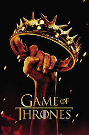
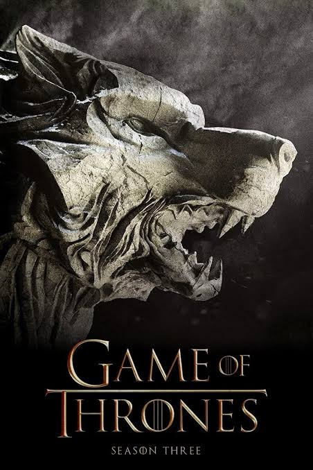
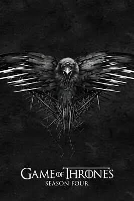
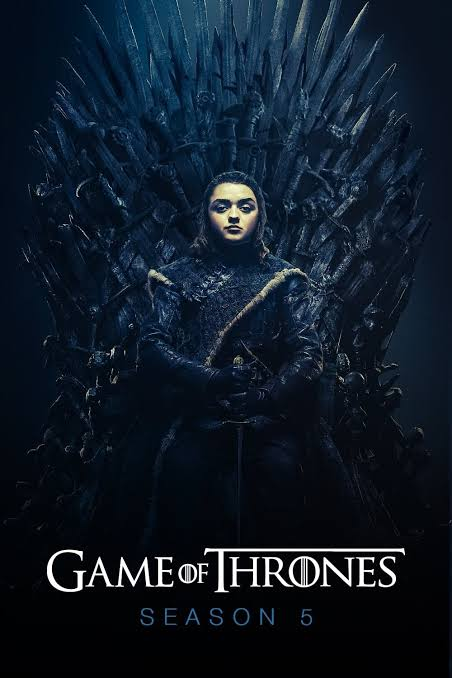
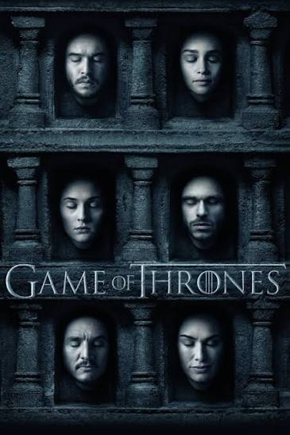
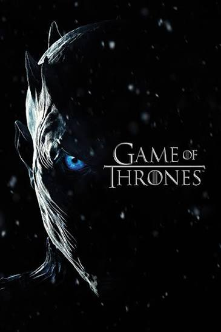
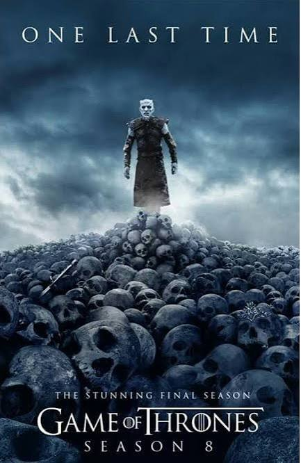

Toutes les saisons
-

10 épisodes
Voir la saison ->
Les maisons de Westeros s'affrontent pour le Trône de fer pendant qu'une menace ancienne se réveille au Nord.Saison 1
2011 · 10 épisodes
4/5 -

10 épisodes
Voir la saison ->
Les maisons de Westeros s'affrontent pour le Trône de fer pendant qu'une menace ancienne se réveille au Nord.Saison 2
2012 · 10 épisodes
3/5 -

10 épisodes
Voir la saison ->
Les maisons de Westeros s'affrontent pour le Trône de fer pendant qu'une menace ancienne se réveille au Nord.Saison 3
2013 · 10 épisodes
5/5 -

10 épisodes
Voir la saison ->
Les maisons de Westeros s'affrontent pour le Trône de fer pendant qu'une menace ancienne se réveille au Nord.Saison 4
2014 · 10 épisodes
1/5 -

10 épisodes
Voir la saison ->
Les maisons de Westeros s'affrontent pour le Trône de fer pendant qu'une menace ancienne se réveille au Nord.Saison 5
2015 · 10 épisodes
4/5 -

10 épisodes
Voir la saison ->
Les maisons de Westeros s'affrontent pour le Trône de fer pendant qu'une menace ancienne se réveille au Nord.Saison 6
2016 · 10 épisodes
4/5 -

10 épisodes
Voir la saison ->
Les maisons de Westeros s'affrontent pour le Trône de fer pendant qu'une menace ancienne se réveille au Nord.Saison 7
2017 · 10 épisodes
3/5 -

10 épisodes
Voir la saison ->
Les maisons de Westeros s'affrontent pour le Trône de fer pendant qu'une menace ancienne se réveille au Nord.Saison 8
2018 10 épisodes
4/5